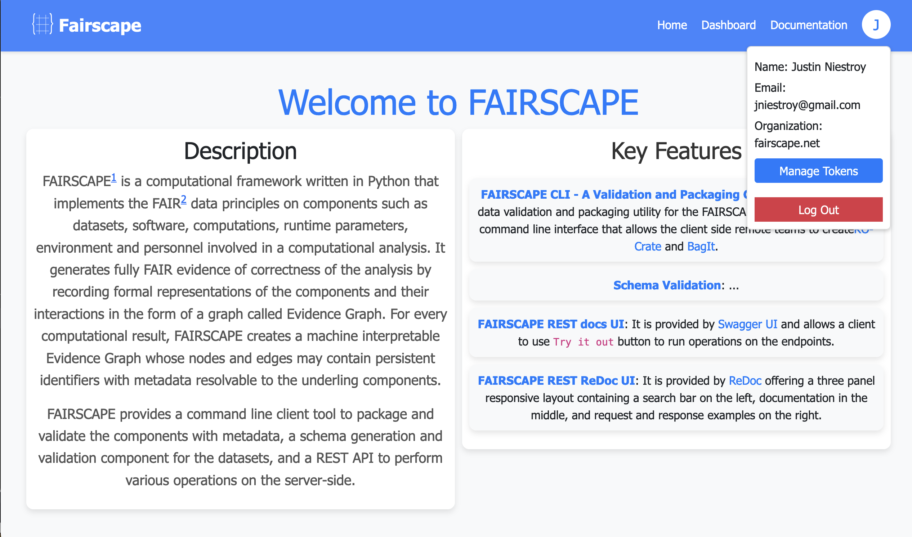
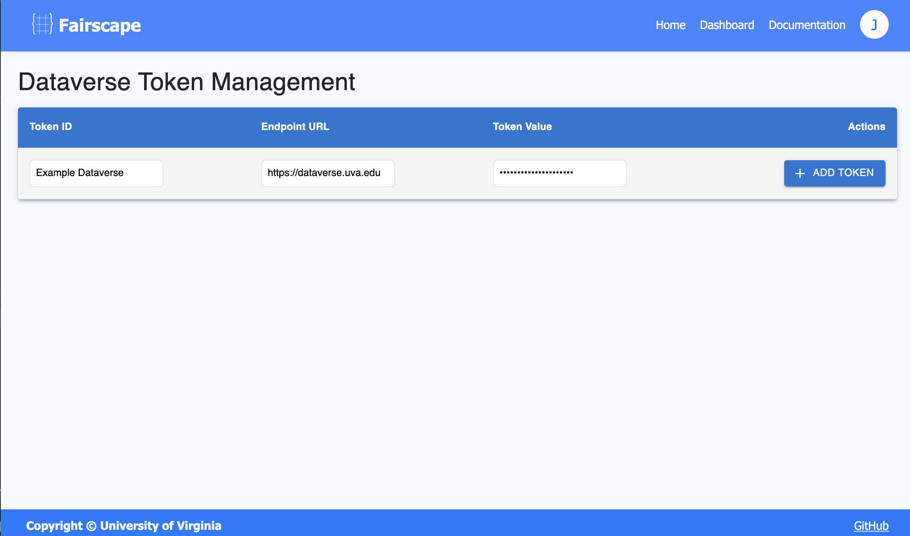

Publishing ROCrate to Dataverse: A Step-by-Step Guide
1. Generate Dataverse API Token

- Log in to your Dataverse account. UVA Dataverse
- Click on your username in the top right corner
- Select "API Token" from the dropdown menu
- Click "Create Token" if you don't have one already
- Copy the generated API token for future use
2. Configure Fairscape Token Management

- Log in to Fairscape server here
- Click "Manage Tokens" in the top navigation
- Fill in the required fields:
- Token ID (e.g., "My UVA Dataverse Token")
- Endpoint URL (The Dataverse instance you are uploading to e.g.,"https://dataverse.uva.edu")
- Token Value (paste your Dataverse API token)
- Click "ADD TOKEN" to save 
3. Navigate to RO-Crate Publication

- Go to your ROCrate metadata page in Fairscape
- Click the "Publish ROCrate to Dataverse" button at the bottom of the page
4. Complete Publication Form
 The required fields are auto-populated, but you can edit them as needed (marked with *):
The required fields are auto-populated, but you can edit them as needed (marked with *):
- Select Dataverse Instance from the dropdown
- Choose your configured Dataverse instance
- Database Configuration:
- Confirm Database Name (default: "libradata")
- Publication Details:
- Title*: Verify or update the ROCrate title
- Authors*: Edit/Add all relevant authors
- Description*: Review and update as needed
- Keywords*: Confirm or modify keywords
- Publication Date*: Verify the date is correct
5. Publish ROCrate
- Final Review:
- Double-check all entered information
- Ensure all required fields are completed
- Verify Dataverse instance selection
- Publication:
- Click "Publish to Dataverse" button
- Wait for the publication process to complete